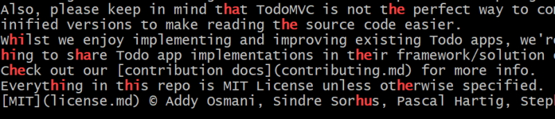
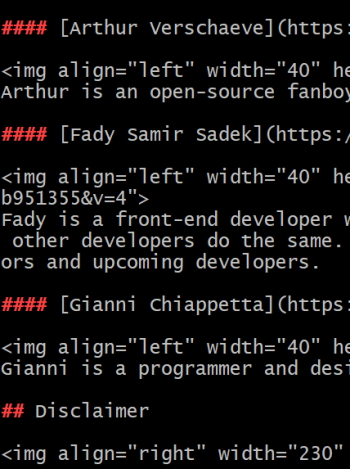
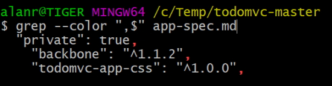

Use Grep for Fast Search from the Command Line
Search The Contents Of Files Using Grep
For most of my grep searches I will use the following command.
grep --color -in
- --color for colour output.
- -i for case-insensitive.
- -n for line numbers.
Grep is helpful for searching through projects. Our first example is searching for information in a package.json file.
Find version number
grep version package.json
"version": "0.1.1",
Breaking that command down we have.
- grep is the program name.
- version is the text we are searching for.
- package.json is the file we are searching trough.
Find all gulp references
grep --color -in gulp package.json

search markdown files for headings
grep "#" app-spec.md contributing.md code-of-conduct.md
Partial output

Can also search using glob patterns.
grep "#" *md
This will search through all md files in the current directory.
Search Directory Contents Using Grep
grep toggle ./*
This will give us some results but it won't search through all directories.
grep -r toggle .
This will now let us search through all files in all directories recursively which returns way too much information.
We can drill down with.
grep -r toggle examples/react/js
This searches all files in the directory, examples/react/js.
Search For Filename Patterns Using Find
We can search for all files with a particular extension.
find . -name "*jsx"
./examples/react/js/app.jsx
./examples/react/js/footer.jsx
./examples/react/js/todoItem.jsx
./examples/react-alt/js/app.jsx
./examples/react-alt/js/footer.jsx
./examples/react-alt/js/todoItem.jsx
./examples/react-backbone/js/app.jsx
./examples/react-backbone/js/footer.jsx
./examples/react-backbone/js/todoItem.jsx
This is the list of files that it found with a .jsx extension.
find works differently to the grep command. First we specify where we are searching, then what we are searching for.
Search Matching Files By Combining Find And Grep With Xargs
find will search for all files with a particular pattern.
find examples/ -name "*Spec.js"
Result
examples/angularjs/test/unit/directivesSpec.js
examples/angularjs/test/unit/todoCtrlSpec.js
examples/angularjs_require/test/unit/directives/todoEscapeSpec.js
examples/angularjs_require/test/unit/directives/todoFocusSpec.js
examples/vanillajs/test/ControllerSpec.js
Now, we can pipe that result into xargs and what xargs does is execute a command on the piped output. We are now going to run grep on the output.
find examples/ -name "*Spec.js" | xargs grep "describe"
You could do this using grep by itself.
grep -r --include="*Spec.js" "describe" examples/
This command isn't as intuitive as the one using find.
The other benefit over the previous command is that you can run the find part of the command first and when you are satisfied that you are getting the correct pattern of files back you can then pipe them to grep to search those particular files.
Search The Contents Of A Git Repository With Git Grep
When searching through Git projects we can use Git's grep and that will use the .gitignore file to ignore files that we don't want to search like the node_modules directory.
git grep import
Partial results

Show Context Around Matches Using Grep
Remember our header search in markdown files?
grep "#" *md
This will give me a listing of all headers in markdown files. What if I want more context? I can add numbering to find out where the headers appear in a particular markdown file. This will help me if I want to navigate to a header in a file in my text editor.
grep -n "#" *md
-n will add line numbers
readme.md:46:#### Sam Saccone - Developer
readme.md:51:#### Arthur Verschaeve - Developer
readme.md:56:#### Fady Samir Sadek - Developer
readme.md:61:#### Gianni Chiappetta - Logo designer
readme.md:66:## Disclaimer
readme.md:77:## Getting Involved
readme.md:84:## License
Another form of context will be to add content around the match and we can do this with.
grep -n -A 2 "#" *md
-A 2 will add two lines of content after the matched line so that you can see some context around the match.
grep -n -A 2 -B 2 "#" *md
This will add two lines of context before and after the match.
An easier way to do this is use the following command to give you the before and after context.
grep -n -C 2 "#" *md
Search For Basic Patterns Using Grep
The first basic pattern we will use is the . (dot) pattern.
grep --color "h." readme.md

The . (dot) pattern matches any character so it picks up an h plus ant character after that h.
grep --color "http." readme.md

What if you want to search for a literal dot?
grep --color "\.com" readme.md
The next special character is the * (star) character.
grep --color "#*" readme.md

This pattern #* finds the first hash and then all other hashes after it.
Note: if there are more hashes in a line of text then the pattern will find the first match and then ignore all other characters until it finds the next hashes in the line.
You can use multiple special characters in your pattern.
grep --color "(.*)" readme.md

This will find all characters within the bracket pattern. Note that if there are multiple bracket patterns on one line then all characters within both bracket patterns will also be caught,
Search For More Complex Patterns With Regex In Grep
Another special character you can use in you patterns are the ? and + characters. These determine how many times a pattern should match.
originally we used the dot (.) character to specify the next character.
grep "http." readme.md
This will catch https and http: which may not be what we want to catch.
We can do this more cleanly with.
grep --color "https\?" readme.md
This will catch either http or https, not the http: pattern

The question mark says match this character zero or one time. So match the "s" zero or one time in the pattern.
Note: we have to escape the question mark with a backslash.
The next special character is the + sign. This says match the character one or more time in the pattern
grep --color "https\+" readme.md
So now we match the "s" one or more times, so in our search this time we won't match http.
If we search for the # sign with a pattern of "#+" we will get the following.
grep --color "#\+" readme.md

This will give us a list of all headers but if we change this to:
grep --color "###\+" readme.md
And we get:

This pattern says search for 2 hashes and then a third pound or more. It will catch hashes with 3 or more hashes.
We do we have to escape ? and + but not the . or * characters? This is because grep handles the . and * as basic regular expressions and the ? and + are classed as extended regular expressions.
We could get around this with an E flag.
grep --color -E "###?" readme.md
or.
grep --color -E "###+" readme.md
It is probably easier to escape the extended characters.
Search For Optional Patterns With Grep Or
We can use optional regular expression patterns to search for more than one option.
echo "Is it grey or gray?" | grep --color "grey\|gray"

Once again the | (or) characters is an extended regular expression character so we escape it or use the -E flag.
Now we will do another optional search using the recursive flag to search all directories in examples/
grep --color -r "grey\|gray" examples/
Specify Line Beginning And End In Patterns Using And With Grep
When we have been searching for hash characters so far we have been searching for characters anywhere in our file. We can specify anchor tags to search at the start or end of a file.
grep --color "#" app-spec.md
Will find hash characters anywhere in the file.
We can get more specific, for example search for a hash character as the first character in a line with the ^ anchor tag.
grep --color "^#" app-spec.md

To search at the end of a line.
grep --color ",$" app-spec.md

We can combine different patterns to find more complicated search strings. For example find the ES6 import statements in a file.
grep --color -r "^import .* from" examples/

Search For Classes Of Characters Using Bracket Expressions With Grep
If you want to match a whole class of characters the you can use characters in grep.
echo "abc123" | grep --color "[ab]"

This is checking for the characters a or b.
echo "abc123acb" | grep --color "[ab]"

You can match all lowercase characters with.
echo "abc123acb" | grep --color "[a-z]"
The following expression will match 123.
echo "abc123acb" | grep --color "[1-9]"
Let's combine these to make a more complex expression.
grep --color "de[a-z]*er" readme.md

This matches the words developer and designer. We have two literal strings, de and er and then we match any number of alphabetical characters that start and end with the two literal strings.
Instead of typing in a-z there are some built in classes that you can use.
grep --color "de[[:alpha:]]*er" readme.md
[:alpha:] means the alphabetic characters.
Note: that this will match uppercase and lowercase alpha characters.
We can do a case insensitive search using brackets.
find . -name "*js" | grep --color "[sS]pec"
This means find spec or Spec.
Search With Groups Using Grep
Earlier we learnt how to search optional patterns using the optional bar.
grep -rE --color "grey|gray" .
This is good for simple searches but what if we want to search for more options. We will have to use grouping.
This statement searches for grey OR gray OR resolved with a closing double quote.
grep -rE --color "(grey|gray)|(resolved)\"" .
Another set of grouping options.
grep -rE --color "(grey|gray)(-|\")" .
We search for grey OR gray followed by either a - or ".
We can get even more descriptive with our groupings.
grep -rE --color "(grey|gray)(\'|\"): (\'|\")#?[[:xdigit:]]+" .
Note: this didn't work for me. I had to unescape the single quotes.
grep -rE --color "(grey|gray)('|\"): ('|\")#?[[:xdigit:]]+" .
Results.
Find Matches Excluding A Pattern With grep -v
Have a look at all the JavaScript files in the angularjs example.
find examples/angularjs -name "*js"
Returns.
examples/angularjs
examples/angularjs/js
examples/angularjs/js/app.js
examples/angularjs/js/controllers/todoCtrl.js
examples/angularjs/js/directives/todoEscape.js
examples/angularjs/js/directives/todoFocus.js
examples/angularjs/js/services/todoStorage.js
examples/angularjs/node_modules/angular/angular.js
examples/angularjs/node_modules/angular-resource/angular-resource.js
examples/angularjs/node_modules/angular-route/angular-route.js
examples/angularjs/node_modules/todomvc-common/base.js
examples/angularjs/test/config/karma.conf.js
examples/angularjs/test/unit/directivesSpec.js
examples/angularjs/test/unit/todoCtrlSpec.js
We are only interested in the application code and we don't want to search for files in node_modules.
We can do this bt piping our initial results into grep and using the inverse pattern matching -v.
find examples/angularjs -name "*js" | grep -v "node_modules"
Returns.
examples/angularjs
examples/angularjs/js
examples/angularjs/js/app.js
examples/angularjs/js/controllers/todoCtrl.js
examples/angularjs/js/directives/todoEscape.js
examples/angularjs/js/directives/todoFocus.js
examples/angularjs/js/services/todoStorage.js
examples/angularjs/test/config/karma.conf.js
examples/angularjs/test/unit/directivesSpec.js
examples/angularjs/test/unit/todoCtrlSpec.js
In this example instead of matching everything that matches we are matching everything that doesn't match.
find examples -name "*js" | grep -vE "node_modules|[S|s]pec"
In this case we knockout any files with node_modules and the words Spec or spec.